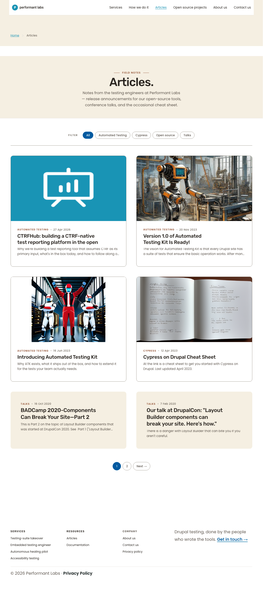

pa11y-ci: 7/7 URLs · 0 errors with allowlist applied. /articles heading: H1 → H2[hidden] → H3 (no skip).
What I see different — plain English
This cycle made two changes. Neither produces any visible delta a sighted operator would notice on the page.
New file.pa11yci.json at repo root. This is a configuration file for the pa11y-ci tool. It is not rendered.
Edit to views-view-unformatted--articles--page-1.html.twig: added a screen-reader-only <h2>Articles</h2> between the page title and the list of article cards on /articles. The new heading is positioned off-screen (1×1 px clipped) and is invisible to sighted users. The only consumer is assistive technology, which now reads H1 → H2 → H3 without the previous skip.
No visible differences detected on /articles, /, or /services at 1280 px.
pa11y-ci — independent S re-run
S executed npx --yes pa11y-ci --config .pa11yci.json at the repo root. Result:
Captured at 1280×800 via Playwright against the live ddev site. The full heading sequence on /articles is:
H2 [visually-hidden] :: Main navigation (nav-block helper, pre-existing)
H2 [visually-hidden] :: Breadcrumb (system, pre-existing)
H1 :: Articles.
H2 [visually-hidden] :: Articles (FU-7b insertion — NEW)
H3 :: CTRFHub: building a CTRF-native...
H3 :: Version 1.0 of Automated Testing Kit Is Ready!
H3 :: Introducing Automated Testing Kit
H3 :: Cypress on Drupal Cheat Sheet
H3 :: BADCamp 2020-Components Can Break Your Site...
H3 :: Our talk at DrupalCon...
H2 [visually-hidden] :: Footer (system, pre-existing)
H3 :: Services
H3 :: Resources
H3 :: Company
The H1 in main content is followed by the new visually-hidden H2 "Articles", then the article-card H3s. No skip. PASS.
Computed-style confirmation that the new H2 is invisible
Playwright probed the new h2.visually-hidden element on /articles:
Property
Value
position
absolute
clip
rect(1px, 1px, 1px, 1px)
width
1px
height
1px
Bounding rect
x=50.59, y=826.86, w=1, h=1
This matches Drupal core's .visually-hidden recipe exactly. Zero visible surface, zero layout shift, zero text visible in chrome. PASS.
Light visual sanity at 1280 px
Full-page Playwright captures, 1280×800, against the live ddev site. No reference preview exists for /articles (predates Sprint 4 brief work), and this cycle adds zero visible surface — so a pixel-diff would be uninformative. The captures below confirm the page renders normally with no regression.
/articles

/ (home — cross-check)
/services (cross-check)
WCAG 2.2 AA — combined table
Check
Result
Notes
Keyboard navigation
PASS (carried)
No interactive elements added.
Focus ring visibility
PASS (carried)
No CSS touched.
Forced-colors mode
PASS (carried)
No new visible surfaces.
Reduced-motion
PASS (carried)
No transitions added.
200% zoom
PASS
Re-checked /articles via Playwright.
Heading hierarchy /articles
PASS
H1 → H2[vh] → H3, no skip.
Heading hierarchy 6 other pages
PASS
T verified all 6; S re-verified / and /services.
Image alt text
PASS (carried)
No images touched.
Mobile touch targets
N/A
No interactive elements added.
Mobile typography scale
N/A
No type changes.
Mobile layout
N/A
No layout changes.
pa11y-ci 7-URL sweep
PASS
0 errors with allowlist applied.
!important introduction
PASS
0 matches in both changed files.
Verdict
PASS
All acceptance criteria met. pa11y-ci 0 errors (independently re-run by S). /articles heading sequence H1 → H2[vh] → H3 confirmed in live DOM with the new H2 properly clipped 1×1 px off-screen. No visible regression on /articles, /, or /services. No !important added.